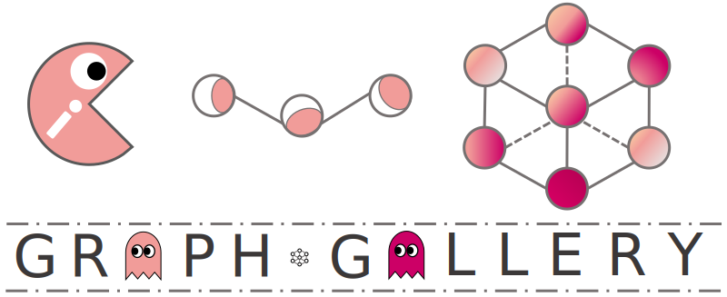

1.0.1
Installation
Installation
Package Reference
graphgallery.utils
graphgallery
»
Index
Index
A
|
C
|
D
|
G
|
I
|
M
|
N
|
P
|
R
|
S
|
T
|
U
A
add() (Progbar method)
ask_to_proceed_with_overwrite() (in module graphgallery.utils)
C
create_table() (in module graphgallery.utils)
D
dict_to_string() (in module graphgallery.utils)
G
get_logger() (in module graphgallery.utils)
graphgallery.utils (module)
I
is_ipynb() (in module graphgallery.utils)
M
merge_as_list() (in module graphgallery.utils)
N
NeighborSampler (class in graphgallery.utils)
nullcontext() (in module graphgallery.utils)
P
Progbar (class in graphgallery.utils)
PyGNeighborSampler (class in graphgallery.utils)
R
raise_if_kwargs() (in module graphgallery.utils)
S
sample() (NeighborSampler method)
(PyGNeighborSampler method)
setup_logger (in module graphgallery.utils)
T
TimeOut (class in graphgallery.utils)
tqdm() (in module graphgallery.utils)
U
update() (Progbar method)